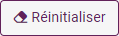
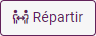
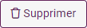

Définir des quotas de saisie
Les quotas de saisie sont des limites définies pour certaines caractéristiques démographiques ou certains comportements des répondants. Ces quotas peuvent inclure des limites sur le nombre de personnes d'un certain sexe, âge, ou région géographique qui peuvent répondre à l'enquête. Les quotas de saisie sont utilisés pour s'assurer que l'échantillon de répondants est représentatif de la population cible, et pour éviter des biais dans les résultats de l'enquête.
Pour définir des quotas de saisie, procédez comme suit :
-
Depuis l'onglet ETUDE , cliquez sur Quotas.
-
Renseignez l'effectif cible (le nombre de réponses total pour votre enquête).
-
Cliquez sur le bouton Ajouter un quota.
-
Sélectionnez la variable que vous souhaitez utiliser, puis affectez un effectif (ou un pourcentage) à ses modalités.
EXEMPLE : Nous souhaitons dans notre enquête restreindre les participants à 40 hommes et 60 femmes. Nous définirons donc un quota de 100 réponses dont 40 hommes et 60 hommes pour notre variable "genre".
3 boutons sont à votre disposition pour vous aider à mettre en place un quota :

: Permet de réinitialiser les valeurs du quota en cours
: Permet de répartir les effectifs uniformément.
: Supprime le quota en cours.REMARQUE : La répartition doit être égale à 100 % sur l'effectif total défini.
-
Cochez l'option Activer des quotas sur l'enquête.
-
Cliquez sur Enregistrer pour valider.

Paramétrage des quotas
Pour accéder au paramétrage des quotas, cliquez sur Actions sur quotas.
-
Vous pouvez choisir de prendre en compte les observations en cours de saisie pour le calcul des quotas. Pour ce faire il suffit de cocher l'option Prendre en compte les observations en cours de saisie pour le calcul des quotas.
-
Par défaut, les observations hors quotas sont conservées dans la partie Données. Elles peuvent être identifiées en se basant sur la variable Progression.
Si vous ne souhaitez pas les garder, il suffit de décocher l'option Conserver les observation hors quota.
-
Choisissez l'action à appliquer pour chaque cas de figure :
Afficher un message à l'utilisateur en expliquant pourquoi il ne peut pas répondre ou effectuer une redirection vers une page web.
-
QuotaFull :
Le répondant correspond au profil recherché, mais le nombre de réponses attendues est déjà atteint. Ses réponses ne nous sont pas utiles. Il sort de l'enquête, on lui explique pourquoi il ne peut pas répondre.
-
ScreenOut :
Le répondant ne correspond pas au profil recherché. Ses réponses ne nous sont pas utiles. Il sort de l'enquête, on lui explique pourquoi il ne peut pas répondre.
-
Cas Complete:
Le répondant a le profil recherché, il a complété le questionnaire, ses réponses sont enregistrées.
REMARQUE : Pensez à rédiger les messages dans les différentes langues de votre enquête si cette dernière est multilingue.
-

Mettre en place des liens de redirection panélistes Complete, QuotaFull et ScreenOut
Vous devez d'abord créer une variable qui reprendra l'ID du panéliste de votre prestataire.
Cette variable devra être alimentée :
-
En amont de l'enquête (par le panéliste) ;
-
En amont par le prestataire avec ses propres paramètres.
EXEMPLE :
- La variable créée qui reprendra l'ID s'appelle "idpanel"
- Le paramètre utilisé par votre prestataire s’appelle "ID"
- Le lien communiqué aux répondants sera comme suit :
https://beta.sphinxonline.net/tiny/a/0zbt5sdj?idpanel=ID
Les liens à utiliser dans la redirection lors des cas screenOut, quotaFull et complete doivent être renseignés de la manière suivante :
EXEMPLE : https://xxxx?ID=[Idpanel]
xxxx : adresse du site web communiqué par le prestataire
ID: le paramètre utilisé par votre prestataire
Idpanel : le nom de la variable qui reprendra l'ID du panéliste
REMARQUE : Il faut bien indiquer le nom de la variable qui reprend l'ID du panéliste entre crochets (dans notre exemple, il s'agit de la variable "idpanel").
-
Choisissez l'action Redirection.
-
Puis insérez le lien correspondant à chaque cas.